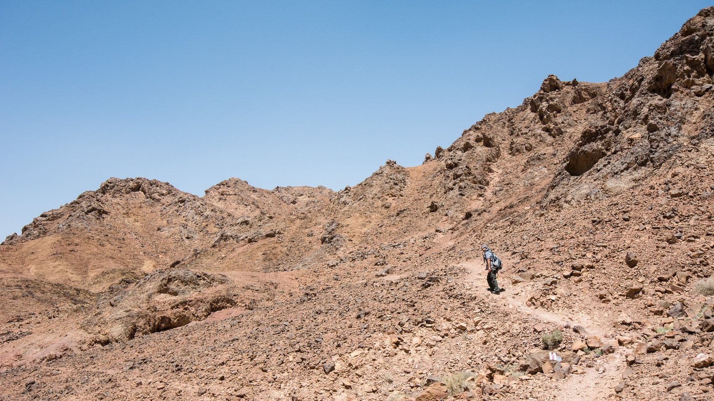
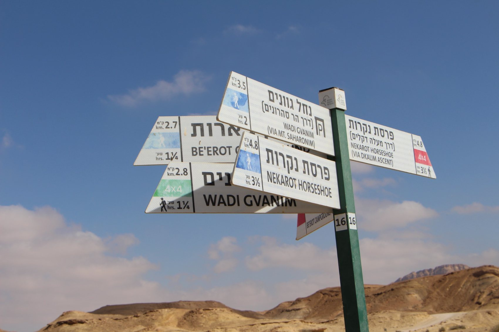

המקטעים המדבריים של שביל ישראל
החלק הדרומי של שביל ישראל שונה מאוד מהמקטעים בצפון ובמרכז. כאן המרחקים גדולים יותר, היישובים רחוקים יותר, המים נדירים יותר, והנוף פתוח וחשוף. מצד שני, זהו האזור שבו השביל מרגיש כמו מסע אמיתי: מכתשים, מצוקים, קניונים, ערוצי נחל ומרחבי ערבה.
האתר מתמקד במקטעים 37–48, עם דגש על מידע שימושי למטיילים שעושים את השביל במקטעים, בסופי שבוע או בכמה ימי הליכה.

איך להשתמש באתר?
בחרו מקטע, קראו את התקציר, בדקו נתונים בסיסיים, ציוד, עונה מומלצת, נקודות עניין והיבטי הגעה וחזרה. את פרטי השטח הסופיים יש לוודא תמיד מול מפה ועדכונים עדכניים.
מקטעים 37–48
הרשימה מבוססת על המספור שסיכמנו לפרויקט: מנחל תמר ונחל עקרבים ועד נחל ברק ונחל ציחור.
מקטע ארוך ומרשים באזור המכתש הקטן, עם נוף מדברי חשוף, מצלעות סלע ותצפיות רחבות. זהו יום משמעותי שדורש תכנון מוקדם, בעיקר בגלל האורך והחשיפה לשמש.
מקטע מאתגר שמוביל מאזור נחל עקרבים אל אורון. הנוף פתוח וחשוף, והיום משלב תנועה במרחב סלעי עם תחושת מדבר חזקה.
אחד המקטעים הידועים והדרמטיים בדרום. ההליכה באזור הכרבולת ושפת המכתש הגדול נחשבת מאתגרת במיוחד, אך גם מהמרשימות בשביל ישראל.
מקטע שממשיך מאזור המכתש הגדול אל מרחב בקעת צין ורמת עבדת. הוא קצר יותר מהמקטעים הקשים סביב הכרבולת, אך עדיין דורש כושר ותכנון.
מקטע מרשים לאורך רמת עבדת ומצוק הצינים, עם שילוב של פסגה בולטת, מעיינות מדבריים ומרחבים פתוחים מעל בקעת צין.
אחד המקטעים היפים באזור מצפה רמון. מתחילים בעומק המדבר ומסיימים על שפת מכתש רמון, עם מעבר הדרגתי מנחל חווה אל תצפיות רחבות.
מקטע קלאסי בתוך מרחב מכתש רמון. הוא מתחיל ליד מצפה רמון ונכנס בהדרגה אל עולם הסלעים, הצבעים והמרחבים של המכתש.
מקטע עוצמתי ומרוחק יותר בתוך מרחב הרמון. הוא מתרחק מכבישים ויישובים ומעניק תחושה מדברית חזקה במיוחד.
מקטע שמחבר בין המרחב המרוחק של גב חולית לבין הערבה. הנוף נפתח בהדרגה ומתחלף ממדבר הררי יותר למרחבי ערבה.
מקטע בעל אופי ערבתי יותר, פתוח ופחות הררי מהמקטעים של הרמון. מתאים למי שמחפש יום הליכה רגוע יחסית אך עדיין מדברי.
מקטע דרומי שממשיך את ההליכה בערבה ומוביל אל חניון נחל ברק. הוא פחות דרמטי מהמקטע שאחריו, אבל חשוב ברצף שביל ישראל בדרום.
מקטע ארוך ומרשים שמחבר בין נחל ברק לנחל ציחור. זהו יום משמעותי מאוד, עם קניונים, ערוצי נחל ומרחבי מדבר פתוחים.

מעבר למסלול עצמו
במדבר כדאי לחשוב מראש על שעות אור, מים, מזג אוויר, דרכי גישה, שטחי אש ושיטפונות. גם מסלול שנראה קצר על הנייר יכול להיות מאתגר בתנאי חום, רוח או עייפות מצטברת.
ציוד בסיסי למקטעי המדבר 🎒
- נעלי הליכה סגורות וטובות.
- כובע, קרם הגנה ומשקפי שמש.
- מים בכמות נדיבה בהתאם לעונה ולמקטע.
- קובץ ניווט שעובד ללא קליטה.
- פנס, אוכל ליום, שכבת רוח וערכת עזרה ראשונה בסיסית.